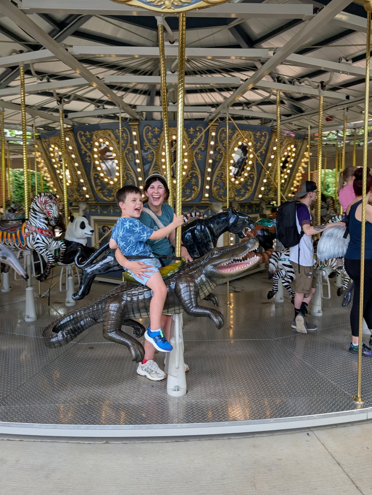

Dr. Homer White
Georgetown College
For inspiring a deep appreciation for mathematical thinking, statistical reasoning, and excellence in teaching. Thank you for teaching that first probability class in R before R-Studio existed and inspiring the creation and use of free materials!
Dr. Will Harris
Georgetown College
For providing thoughtful mentorship, insight, and showing me through MATLAB what is possible in a classroom with programming!
The Late Dr. Christine Leverenz
Georgetown College
Dr. Leverenz once pulled me out of the school cafeteria into a room where it was "declare your major day" and had me sit down and sign the math major paperwork she had already filled out for me. She was the best. She taught me so much about calculus, real analysis, teaching, and life.
The Late Dr. Connie Wood
University of Kentucky
.
Professor Will Bradley
BCTC
These notes are based on his original course shells and notes he created for this course at BCTC. Thank you for being so open to sharing and helping me get settled in at BCTC!
Professor Hunter Chandler
BCTC
The original test subject for most of the created content!
My Wife Katie & Son Max

For their love, encouragement, and support. This work is dedicated to them.